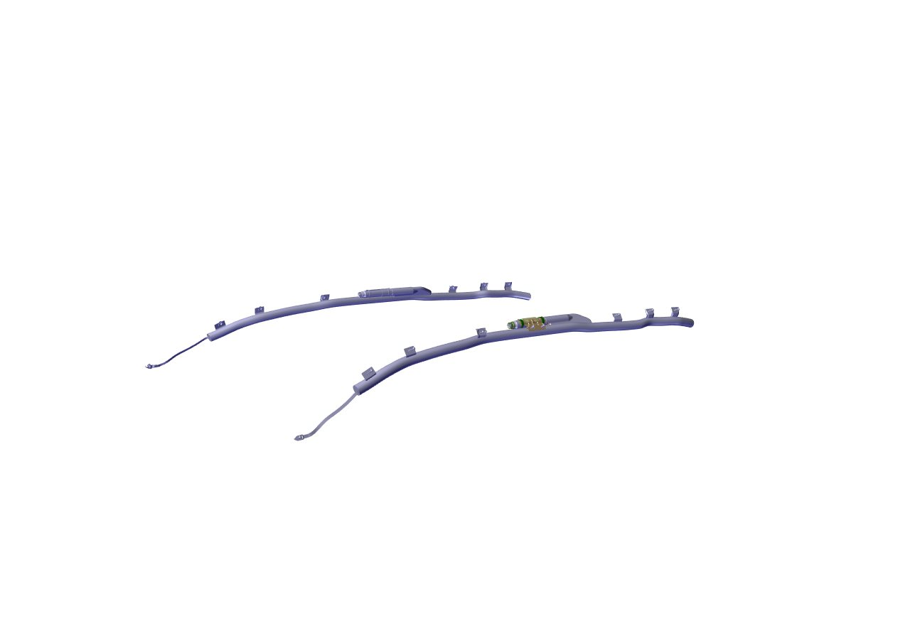
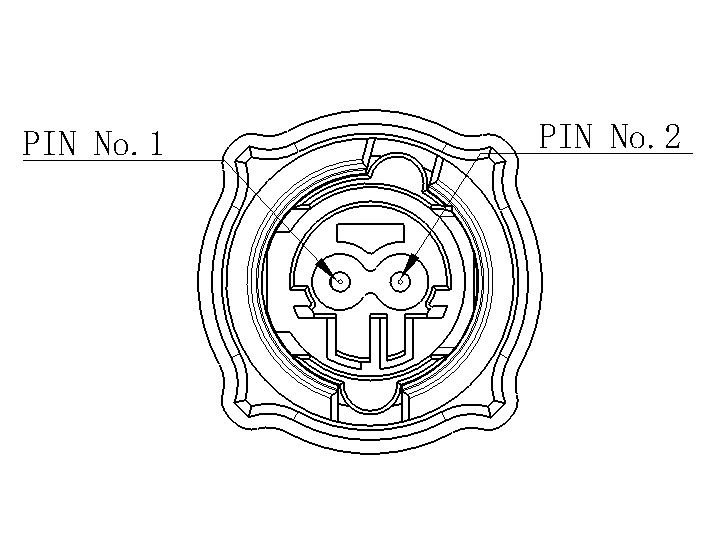

Боковые шторки безопасности установлены внутри облицовочных панелей боковин кузова и обивки потолка, раскрываются при боковом столкновении, образуя мягкую подушку между пассажирами и облицовочными панелями для защиты пассажиров. Сокращенно CAB.

Назначение контактов разъема боковой шторки безопасности

|
Номер контакта |
Назначение контакта |
Тип сигнала |
Диапазон сигнала |
Условия проверки |
Примечание |
|
1 |
Положительный вывод узла боковой шторки безопасности |
Аналоговый |
/ |
Замок зажигания ON, замыкание на массу кузова |
Питание от контроллера подушек безопасности |
|
2 |
Отрицательный вывод узла боковой шторки безопасности |
Аналоговый |
/ |
Замок зажигания ON, замыкание на массу кузова |
Питание от контроллера подушек безопасности |